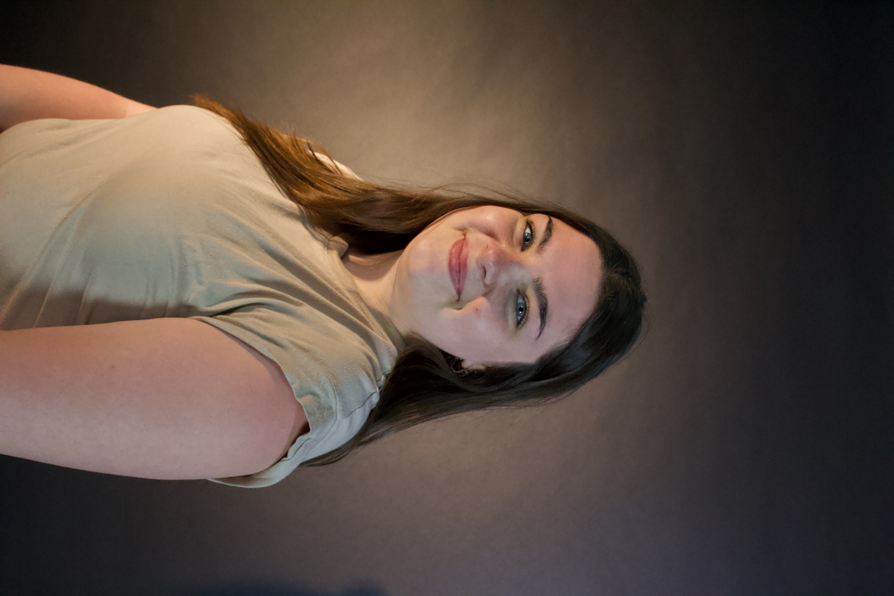

Journalist Reporter Story Teller
Hello!

My name is Alexandra Samargia-Grivette. I am a Chicago based reporter who focuses on social justice issues, and sharing stories of
those whose voices deserve to be heard. As a recent graduate from Roosevelt University, I am
ecstatic to start my journalism career. Writing and telling stories has been a lifelong passion
of mine so, I decided to make a career out of it. My goal is to be the outlet for those who don't have one,
everyone's voice deserves to be heard.